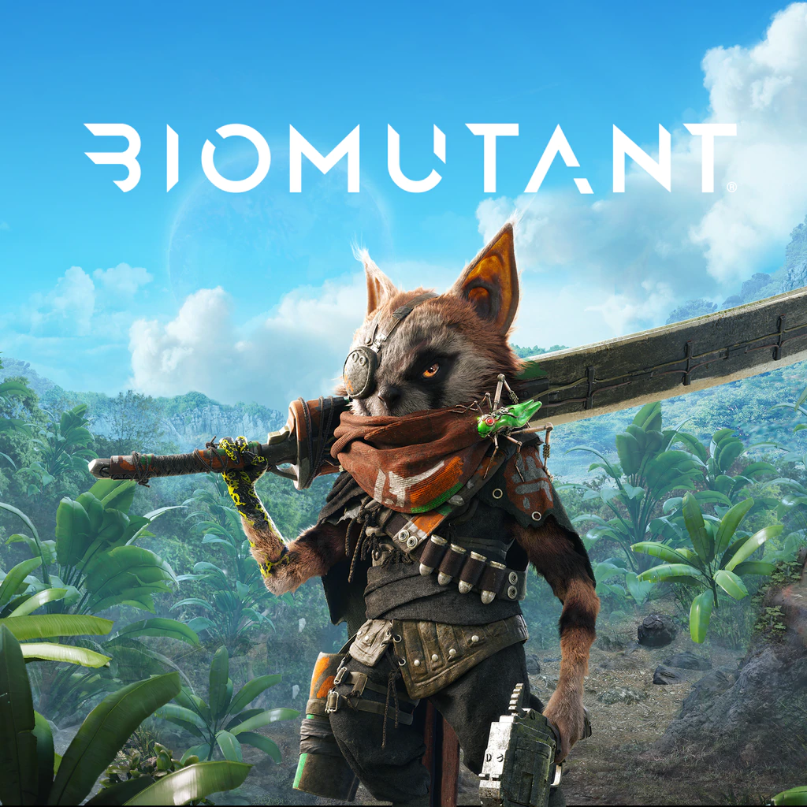
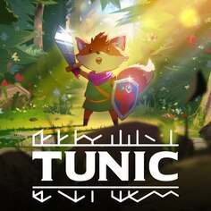
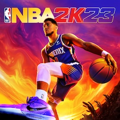

FIFA 23
FIFA 23 é um jogo eletrônico de simulação de futebol desenvolvido pela Electronic Arts. O jogo é o último a utilizar a marca FIFA no nome e foi lançado dia 30 de setembro de 2022, para Xbox Series S/X, Xbox One, PlayStation 5, PlayStation 4 e Microsoft Windows.

BIOMUTANT
Biomutant é um RPG de ação desenvolvido pela desenvolvedora sueca Experiment 101 e publicado pela THQ Nordic, O jogo foi lançado em 25 de maio de 2021 para Microsoft Windows, Playstation 4 e Xbox One.

CENTURY OF AGES
Century: Age of Ashes é um videogame de combate aéreo gratuito de 2021 desenvolvido e publicado pela Playwing Bordeaux e lançado em 2 de dezembro de 2021 para Microsoft Windows e em 10 de março de 2022 para Xbox Series X/S.

CONSTRUCTION SIMULATOR
Construction Simulator 2015 ( Bau-Simulator no título original alemão) é um jogo para PC lançado em 2015 pelaempresa alemã Astragon, especializada em software de simulação.

DEMON SOULS
Demon's Souls é um jogo eletrônico de RPG de ação desenvolvido pela Bluepoint Games e publicado pela Sony Interactive Entertainment para o PlayStation 5. O jogo foi lançado como título de lançamento para o PlayStation 5 em novembro de 2020.

IT TAKES TWO
It Takes Two é um videogame de plataforma de ação e aventura desenvolvido pela Hazelight studios e publicado pela Electronic Arts.

LITTLE HOPE
The Dark Pictures Anthology: Little Hope é um videogame de terror de sobrevivência de drama interativo de 2020 desenvolvido pela Supermassive Games e publicado pela Bandai Namco Entertainment.

MAN OF MEDAN
The Dark Pictures Anthology: Man of Medan é um videogame de terror de sobrevivência de drama interativo de 2019 desenvolvido pela Supermassive Games e publicado pela Bandai Namco Entertainment.

PICKLE FUN
Pickle Fun é um jogo de ritmo retrô que permite ao usuário completar um nível com os botões do controlador. Tente completar o nível com seu melhor tempo.

TUNIC
Tunic é um jogo de ação e aventura de Andrew Shouldice e publicado pela Finji.

TOY STORY 3
Toy Story 3: The Game é um jogo baseado no filme Toy Story 3. É publicado pela Disney Interactive Studios e desenvolvido por Avalanche Software.

NBA2K23
NBA 2K23 é um videogame de basquete desenvolvido pela Visual Concepts e publicado pela Take-Two Interactive sob orótulo 2K, baseado na National Basketball Association (NBA).